| Scale: 0.07 ;Density: 50% | Scale: 0.07 ;Density: 100% |
 |
 |
| Scale: 0.3 ;Density: 50% | Scale: 0.3 ;Density: 100% |
 |
 |
The MaxFEM Electrostatics 3D application numerically solves electrostatics bidimensional problems in Cartesian coordinates. You can find extensive information about the electrostatic mathematical model in the MaxFEM Models user guide.
MaxFEM allows to consider linear dielectric materials or conducting media as well as different kinds of charge densities. The admissible options both in the 2D and 3D cases are summarized in the tables below.
| Material properties (ε) | 2D | 3D |
| Linear and isotropic | Yes | Yes |
| Linear and orthotropic | Yes | Yes |
| Admisible charges | Cartesian 2D | Cartesian 3D |
| Point charges | -- | Yes |
| Linear charges | Yes | Yes |
| Surface charges | Yes | Yes |
| Volumetric charges | Yes | Yes |
Remark: See MaxFEM Electrostatics 2D user guide for further information about 2D electrostatic problems.
For the numerical approximation of electrostatics problems, MaxFEM uses Lagrange finite elements of order one to compute the electric potential V. Thus the electric field is approximated by piecewise functions in each element of the mesh (triangles in 2D and tetrahedra in 3D).
To use the electrostatic application the user needs:
To provide a finite element mesh of the domain: menu Mesh.
To impose the boundary conditions on the boundaries: menu Boundary Conditions.
To assign materials to the different components of the domain: menu Properties. Materials must be previously selected and/or defined in the Materials database.
To assign source properties: menu Sources.
To solve the problem in direct or remote mode: menu Solver/Run or Solver/Run remote, respectively. The user can stop the computation before it is completed in the label Solver/Stop.
Once the problem has been solved, various quantities and fields based on the potential can be computed. It is also possible to create displays of the results: menu Visualization.
All the previous steps are described in the items below
MaxFEM does not include a mesh generator tool so the user must provide its own meshes. In the electrostatic application, mesh files can be in unv or mfm format (see section MaxFEM mesh files for a complete description of the mesh formats). MaxFEM allows P1 Lagrange triangular finite elements for 2D problems and P1 Lagrange tetrahedral finite elements in the 3D case. Mesh may be loaded from the Mesh menu by choosing
Mesh → Open → Choose mesh file → name.unv
Preferably, mesh file must be in unv format, but mfm format is also allowed.
In the menu Properties the user can assign a material to the different parts of the computational domain.
First, you must select the number assigned to the surface reference in the mesh (1, for instance)
Properties → Materials → Choose surface references → 1
Then, you select the material (copper, for instance)
Properties → Materials → Choose material → copper
Boundary conditions is a menu entry to define boundary or interface conditions and attach them to specific boundaries. Electrostatics application considers two types of boundary conditions.
In this case, the value VD of the electrostatic potential on the boundary ΓD must be given. To do that, you need:
Define the boundary condition (for instance, blocking_1)
Boundary conditions → Dirichlet: electrostatic potential, V (V) → blocking_1 → Add
Define the boundary condition via a constant or a precompiled function
Dirichlet conditions: blocking_1
The condition is given by: A constant or a function
Assign the boundary condition to the corresponding boundary reference(s). For instance:
The condition is given by → A constant → Line references → 1 2 4
If VD takes a constant value, define this value:
The condition is given by: A constant → Constant value → 0.10
If VD is a precompiled function, select “Function defined by user”:
The condition is given by: A function → Function name → Function defined by user
In this case, the user must edit the file modulos_electros.f90 of the folder $INSTALLDIR/sources/electrostatics3d/ of the installing directory and define its own function in the line 676 of the module bloqueo, just after the sentences
elseif (dir%fun(indice) == 1) then ! 'Function defined by user'
!'User defined: Function defined by user'
Then, the user must recompilate the solver before running it.
In this case, the value -D·n of the surface charge density across the boundary ∂ΩN must be given. To do that, you need to follow the same steps as for the Dirichlet conditions but selecting
Boundary conditions → Neumann: normal component of electric field
If the user defines -D.n as a precompiled function, select "Function defined by user" as follows:
The condition is given by: A function → Function name → Function defined by user
In this case, the user must edit the file modulos_electros.f90 of the folder $INSTALLDIR/sources/electrostatics3d/ of the installing directory and define its own function in the line 724 of the module neumann, just after the sentence
elseif (neu%fun(indice) == 1) then ! 'Function defined by user'
!'User defined: Function defined by user'
Then, you must recompilate the solver before running it.
In the electrostatic 3D application, sources can be:
Point charge, ρp (C)
Line charge density, ρl (C/m)
Surface charge density, ρs (C/m2)
Volumetric charge density, ρv (C/m3)
To impose a charge density, the user must perform the following steps depending on the type of charge.
Choose the type of charge in the Sources item of the application.
Sources → Point charge, ρp (C)
Then, define a new charge and press the button Add of the dialog box.
Point sources: source _1 → Add
Press the name source _1 you have just created. Then a new dialog box appears where you must introduce the coordinates of the point(s) where the charge is imposed and its value(s). Notice that you can introduce an array of points where you can define the corresponding charge value.
Choose the type of charge density in the Sources item of the application.
Sources → Line charge density, ρl (C/m)
Then, define a new charge and press the button Add of the dialog box.
Line sources: source _1 → Add
Press the name source_1 you have just created and define the charge via a constant or a precompiled function
Line sources: source_1
If the source takes a constant value, define its value and the corresponding line reference(s):
The condition is given by → A constant → Line references → 1 2 4
The condition is given by → A constant → Constant value → 0.1e-10
If the source is a precompiled function, select
The condition is given by → A constant → Line references → 1 2 4
The condition is given by → A function → Function name → Function defined by user
In this case, the user must edit the file modulos_electros.f90 of the folder $INSTALLDIR/sources/electrostatics3d/ of the installing directory and define its own source function in the line 453 of the module cargacur, just after the sentence
elseif (cur%fun(indice) == 1) then ! fun_0 == 'Function defined by user'
Then, the user must recompilate the solver before running it.
Choose the type of charge density in the Sources item of the application.
Sources → Surface charge density, ρs (C/m2)
Then, define a new charge and press the button Add of the dialog box.
Surface sources: source _1 →Add
Press the name source_1 you have just created and define the charge via a constant or a precompiled function
Surface sources: source_1
If the source takes a constant value, define its value and the corresponding Surface reference(s):
The condition is given by → A constant → Surface references → 1 2 4
The condition is given by → A constant → Constant value → 0.1e-10
If the source is a precompiled function, select
The condition is given by → A function → Surface references → 1 2 4
The condition is given by → A function → Function name → Function defined by user
In this case, the user must edit the file modulos_electros.f90 of the folder $INSTALLDIR/sources/electrostatics3d/ of the installing directory and define its own source function in the line 398 of the module cargasup, just after the sentence
elseif (sup%fun(indice) == 1) then ! fun_0 == 'Function defined by user'
Then, the user must recompilate the solver before running it.
Choose the type of charge density in the Sources item of the application.
Sources → Volumetric charge density, ρv (C/m3)
Then, define a new charge and press the button Add of the dialog box.
Volumetric sources: source _1 → Add
Press the name source_1 you have just created and define the charge via a constant or a precompiled function
Volumetric sources: source_1
If the source takes a constant value, define its value and the corresponding domain reference(s):
The condition is given by → A constant → Domain references → 1 2 4
The condition is given by → A constant → Constant value → 0.1e-10
If the source is a precompiled function, select
The condition is given by → A function → Domain references → 1 2 4
The condition is given by → A function → Function name → Function defined by user
In this case, the user must edit the file funciones3D.f90 of the folder $INSTALLDIR/sources/electrostatics3d/ of the installing directory and define its own source function in the line 20, just after the sentence
elseif (vol%fun(indice) == 1) then ! 'Function defined by user'
Then, the user must recompilate the solver before running it.
If a physical quantity describing a material is temperature dependent, the user must select this option in the item Data of the menu bar:
Data → Temperature field for materials T (ºC)
A dialog box appears where the file name which contains the temperature and the values of the property as a function of those of the temperature must be added
Choose temperature field: Temperature.mff
The field must be written in mff format and contain a value for each of the degrees of freedom of the mesh.
From the resolution of the electrostatic problem, appropriate derived quantities can be computed. The post-processing quantities available in the MaxFEM electrostatic application are summarized in the tables below.
| Symbol | Magnitude | Type | Unit |
| V | Electrostatic potential | S | V |
| E | Electric field intensity | V | V/m |
| T | Temperature field | S | ºC |
Electrostatic application postprocessing quantities
S: Scalar quantity, V: vectorial quantity
MaxFEM provides a set tools for postprocessing and visualization which are available through the item Visualization of the menu bar. The options and their characteristics are summarized in the table below.
| Item | Visualization options | Description |
Mesh |
Triangulation | Represents the mesh of the domain |
| Domain references | Displays subdomains reference number | |
| Surface references | Displays surface reference number | |
| Line references | Displays lines reference number | |
| Point references | Displays points reference number | |
| Element numbering | Displays elements reference number | |
| Vertex numbering | Displays the number of a vertex previously chosen with the mouse | |
| Materials | Displays the name of the material assigned to a subdomain | |
| Slice | Displays the intersection of the domain with a plane | |
| Cut | Displays one part of the domain after intersecting with a plane | |
| Rough cut | Displays one part of the domain after intersecting with a plane without cutting the elements | |
Temperature field T, |
Filled | Displays the field distribution on the domain |
| Threshold | Extracts the cells that fall between a given lower and upper thresholds of the field | |
| Isosurfaces | Displays the curves along which the field has a constant value. A set of scalar values can be specified to extract more than one isoline at a time | |
| Plot over line | Cuts a 3D data object with a plane. An interactive widget can be used for placing the plane in the appropriated place | |
| Slice | Displays the field on the intersection of the domain with a plane | |
| Cut | Displays the field over one part of the domain after intersecting with a plane | |
| Rough cut | Displays the field over one part of the domain after intersecting with a plane without cutting the elements | |
Electric field E |
Vectors | Displays the vector field E |
| Vectors components | Displays each of the components of the vector field E | |
| Close all | --- | Close all the windows containing visualization results |
The user can modify the arrows size by using the parameter Scale in the dialog box:
Electric field → Vectors → Choose options for arrows → Scale
It is also possible to modify the number of vectors in the plot by using the parameter Density in the dialog box:
Electric field → Vectors → Choose options for arrows → Density
| Scale: 0.07 ;Density: 50% | Scale: 0.07 ;Density: 100% |
|
|
| Scale: 0.3 ;Density: 50% | Scale: 0.3 ;Density: 100% |
|
|
It is also possible to modify the number of vectors in the plot by using the parameter Density in the dialog box:
Electric field → Vectors → Choose options for arrows → Density
The goal of this section is to familiarize the user with the MaxFEM electrostatics 3D application by means of simple examples. These examples contain the general steps and all the data needed to describe the physics and to solve the given cases.
To reproduce exactly the examples, keep all the options in the different menus at the default settings. It is important to note that in the cases where the analytical solution is provided, this solution corresponding with the default settings; the one corresponding with other options the user may have changed is not necessarily the same.
Remember that before start to work with a particular application, the user must choose a working directory. This directory will be used to store the files associated with the application. In particular, when a sample data is selected, the interface will automatically make a copy of the files associated with that sample in the working directory.
The following examples can be found:
Johnk, C. Engineering electromagnetic fields and waves. Wiley & Sons. 1988.
Popovic, B. Introductrory Engineering Electromagnetics. Addison Wesley. 1971
In this example, the electrostatic potential V generated by a uniformly volumetric charged sphere with center the origin and radius R=1 is computed. Its volumetric charge density is denoted by ρv (C/m3). Then, the analytical expression for the potential in a point of coordinates (x,y,z) is given by (see[1]).
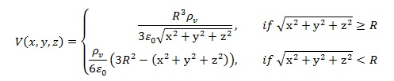
where ε0 denotes the vacuum electric permittivity. The modulus of the electric field is given by
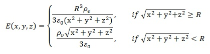
For the numerical resolution, a sphere of center (0,0,0) and radius 2 containing the concentric charged sphere of radius 1 is considered as computational domain. The relative permittivity is considered to be constant and equal to 1. The volumetric charge density is ρv= 1.e-10 C/m3.
Once MaxFEM is open, the user must select the application Electrostatic3D from the Project of the menu bar.
Project → Applications→ Electrostatic3D
Remember that before start to work with a particular application, the user must choose a working directory.
Then, from the item Project of the Menu bar, select
Project → Sample Data→ Example 1: Volumetric charged sphere
The computational domain is a circle of center (0,0) and radius 2 containig a concentric circle of radius 1. The user must upload the mesh malla3Dcs_tet.mfm from the Mesh item of the menu bar.
Mesh → open → Choose mesh file → malla3Dcs_tet.mfm
The user can display the mesh of the computational domain by choosing the option Visualization → Mesh of the Menu bar. If not, the computational domain will be displayed when selecting any item from the menu bar.
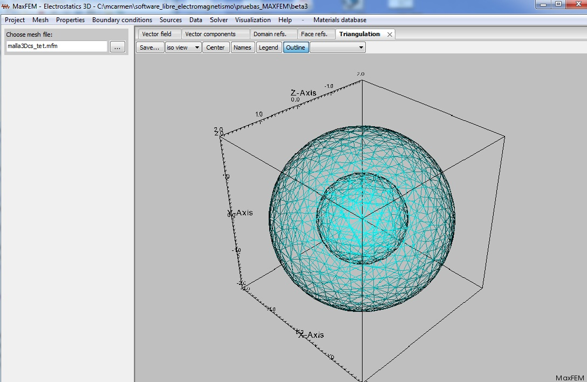
Figure 1: Computational domain.
After we have the mesh, we start to go through the menu bar from the left to right and we choose the different options related to the whole simulation.
The material considered in this example are the so-called Test material 2 and Test material 3 and their properties have been previously defined in the materials database of the interface. To assign these materials to the computational domain, the user must:
Select the item Properties → Materials of the Menu bar.
In the Choose domain references dialog box, select the reference 1.
The dialog box Choose material appears; by default, the material named Test material 2 associated to the reference 1 is displayed.
In the Choose domain references dialog box, select the reference 2.
The dialog box Choose material appears; by default, the material named Test material 3 associated to the reference 2 is displayed.
The user can display the different properties of this material in Materials database item of the menu bar. To do that,
Select the option Materials database → Open
A dialog box appears where the different materials are displayed. Select Test material 2.
A new dialog box appears where the different electromagnetic magnitudes are displayed. Click on the property of your interest, for instance, Relative permittivity.
Choose A constant in the box below and then Isotropic in the Behavior box.
Value displays the value of relative electric permittivity for the selected material, in this case, 1.
Now we are going to impose the boundary conditions. A Dirichlet boundary condition computed from the analytical solution is considered; thus, the default value 5.64716513 corresponds to the potential at the boundary of the sphere. To impose this boundary condition the user must:
Select the option Boundary conditions → Dirichlet: electric scalar potential in the menu bar.
Click on Condition 1 on the Dirichlet conditions dialog box.
In the dialog box The condition is given by, select the option A constant
Click on Surface reference. By default, references 1 2 3 4 2 9 10 13 and 16 associated to this boundary condition are displayed in the box below.
Click on Constant value. By default, in the dialog box Constant value below the value 5.64716513 appears.
Click on the item Sources of the Menu bar to continue with the resolution procedure.
To define the source of the problem, select the option Sources → Volumetric charge density, ρv (C/m3) in the menu bar. A dialog box appears where the user can select/define the volumetric charge density options. In this example, the default option Source 1 is displayed. So now we need to specify the volumetric charge density at the inner sphere. To do that, the user must:
Click on Source 1. A dialog box is displayed below.
In the dialog box The source is given by, select the option A constant
Click on Domain reference. By default, reference 2 associated to this source is displayed in the box below.
Click on Constant value to display/define the value of the charge density. In this example, the default value is 3d-10 (in C/m3).
Select the item Run (or Run remote depending on your preference) of the menu bar to proceed with the resolution of the problem.
Select the item Visualization of the menu bar to display the results.
Click on the option Potential to display the potential. A dialog box appears where the user can choose the field representation.
Choose the option cut and select iso view in the graphic window to display the potential in the domain cut by a plane.
Visualization → Potential → Cut

Figure 2: Electric potential in the domain cut by a plane.
Choose the option Plot over line to display the potential both in the domain and along a line. The user can modify the coordinates of the extreme points of the line in the Extreme points coordinates box or manually at the graphic window.
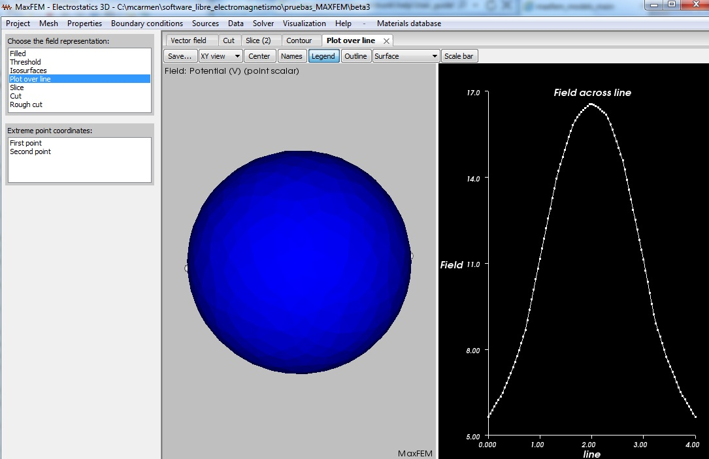
Figure 3: Plot over line representation of the potential.
Choose the option Rough cut and select iso view in the graphic window to display the potential on the part of the domain determined by a given plane. The user can modify the origin and normal vector of the cutting plane in the Configuration box or manually at the graphic window.
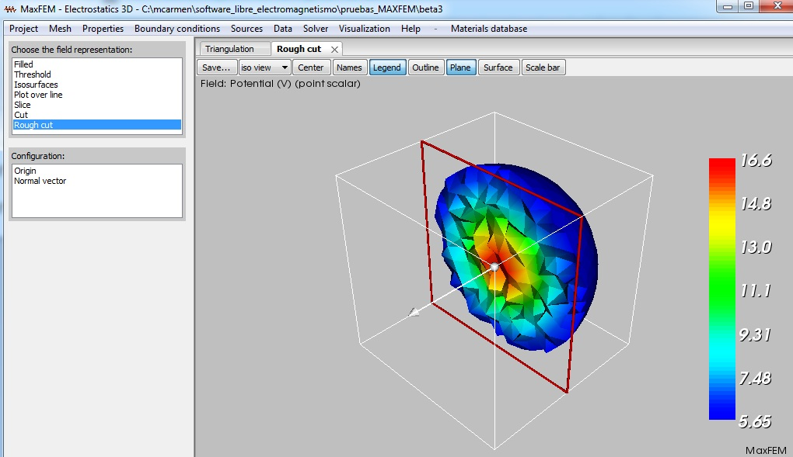
Figure 4: Rough cut representation of the potential.
To display the electric field, choose the option Visualization → Electric field of the menu bar. Select the option Vectors of the dialog box and then state the values for the scale and density of the arrows on the boxes below. For this picture, the scale is 0.02 and the density is 100.
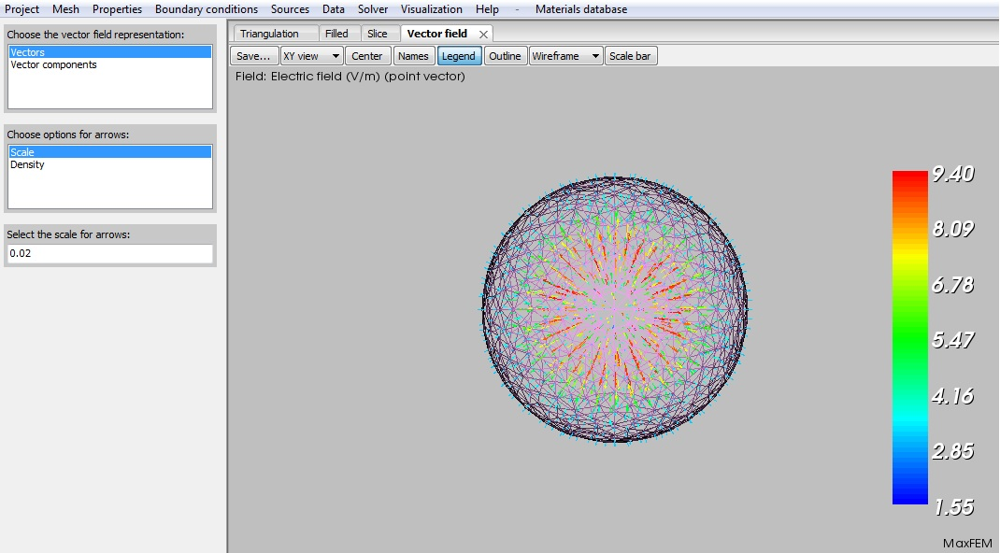
Figure 5: Electric field.
A zoom of the field can be done by using the right buttom of the mouse.
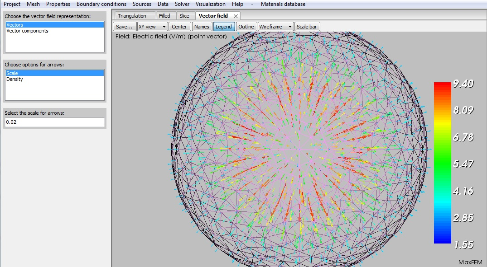
Figure 6: Zoom of the electric field representation.
Select the option Vector components to represent each component of the electric field or its modulus. The options Vector components → X component → Cut were chosen for the next figure as well as iso view in the graphic window .
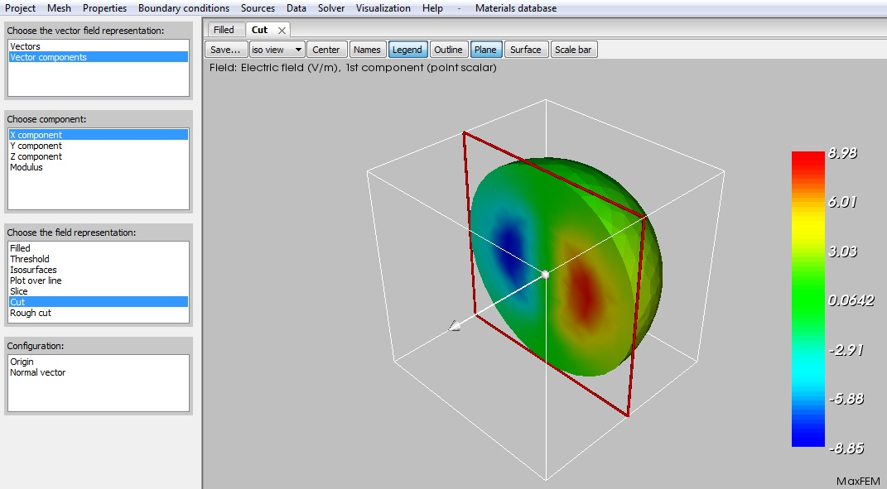
Figure 7: First component of the electric field.
Statement of the problem
In this example, the electrostatic potential V generated by a uniformly surface charged sphere with center the origin and radius R=1 is computed. Its surface charge density is denoted by ρS (C/m2). Then, the analytical expression for the potential in a point of coordinates (x,y,z) is given by .
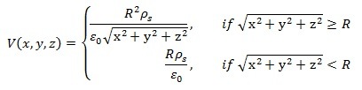
where ε0 denotes the vacuum electric permittivity. The modulus of the electric field is given by
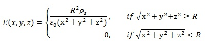
For the numerical resolution, a sphere of center (0,0,0) and radius 2 containing the concentric charged sphere of radius 1 is considered as computational domain. The relative permittivity is considered to be constant and equal to 1. The surface charge density is ρS= 1.e-10 C/m.
Once MaxFEM is open, the user must select the application Electrostatic3D from the Project of the menu bar.
Project → Applications→ Electrostatic3D
Remember that before start to work with a particular application, the user must choose a working directory.
Then, from the item Project of the Menu bar, select
Project → Sample Data→ Example 1: Volumetric charged sphere
The computational domain is a circle of center (0,0) and radius 2 containig a concentric circle of radius 1. The user must upload the mesh mesh_e3d_e2.unv from the Mesh item of the menu bar .
Mesh → open → Choose mesh file → mesh_e3d_e2.unv
The user can display the mesh of the computational domain by choosing the option Visualization → Mesh of the Menu bar. If not, the computational domain will be displayed when selecting any item from the menu bar.
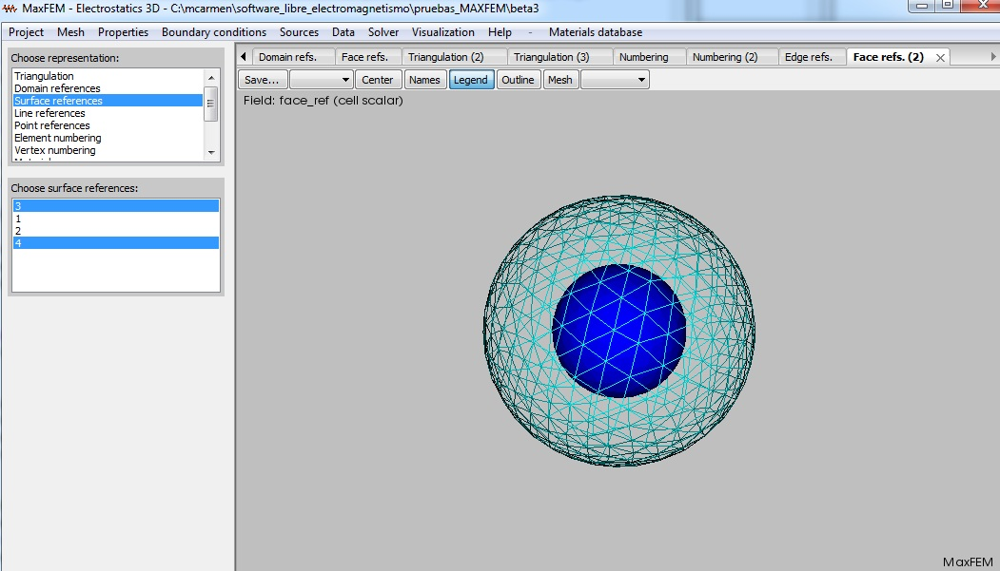
Figure 1: Computational domain with the inner sphere in blue.
After we have the mesh, we start to go through the menu bar from the left to right and we choose the different options related to the whole simulation.
The material considered in this example are the so-called Test material 2 and Test material 3 and their properties have been previously defined in the materials database of the interface. To assign these materials to the computational domain, the user must:
Select the item Properties → Materials of the Menu bar.
In the Choose domain references dialog box, select the reference 1.
The dialog box Choose material appears; by default, the material named Test material 2 associated to the reference 1 is displayed.
In the Choose domain references dialog box, select the reference 2.
The dialog box Choose material appears; by default, the material named Test material 3 associated to the reference 2 is displayed.
The user can display the different properties of this material in Materials database item of the menu bar. To do that,
Select the option Materials database → Open
A dialog box appears where the different materials are displayed. Select Test material 2.
A new dialog box appears where the different electromagnetic magnitudes are displayed. Click on the property of your interest, for instance, Relative permittivity.
Choose A constant in the box below and then Isotropic in the Behavior box.
Value displays the value of relative electric permittivity for the selected material, in this case, 1.
Now we are going to impose the boundary conditions. A Dirichlet boundary condition introduced as a predefined function is considered in boundary reference 1; furthermore, a Neumann boundary introduced as a predefined function is considered in boundary reference 2. To impose these boundary conditions the user must:
Select the option Boundary conditions → Dirichlet: electric scalar potential in the menu bar.
Click on Condition 1 on the Dirichlet conditions dialog box.
In the dialog box The condition is given by, select the option A function
Click on Surface reference. By default, reference 1 associated to this boundary condition is displayed in the box below.
Click on Function name. By default, Example 2: One uniformly charged sphere appears in Choose function name box.
Select the option Boundary conditions → Neumann: normal component of electric field in the menu bar.
Click on Condition 2 on the Neumann conditions dialog box.
In the dialog box The condition is given by, select the option A function
Click on Surface reference. By default, reference 2 associated to this boundary condition is displayed in the box below.
Click on Function name. By default, Example 2: One uniformly charged sphere appears in Choose function name box.
Click on the item Sources of the Menu bar to continue with the resolution procedure.
To define the source of the problem, select the option Sources → Surface charge density, ρS (C/m2) in the menu bar. A dialog box appears where the user can select/define the surface charge density options. In this example, the default option Source 1 is displayed. So now we need to specify the surface charge density at the inner sphere. To do that, the user must:
Click on Source 1. A dialog box is displayed below.
In the dialog box The source is given by, select the option A constant
Click on Surface reference. By default, references 3 and 4 associated to this source is displayed in the box below.
Click on Constant value to display/define the value of the charge density. In this example, the default value is 1e-10 (in C/m2).
Select the item Run (or Run remote depending on your preference) of the menu bar to proceed with the resolution of the problem.
Select the item Visualization of the menu bar to display the results.
Click on the option Potential to display the potential. A dialog box appears where the user can choose the field representation.
Choose the option Plot over line and select iso view in the graphic window to display the potential both in the domain and along a line. The user can modify the coordinates of the extreme points of the line in the Extreme points coordinates box or manually at the graphic window. In the next figure, the potential is plotted over the line from point (-2,0,0) to (2,0,0). As it was expected, the potential has a constant value in the inner charged sphere
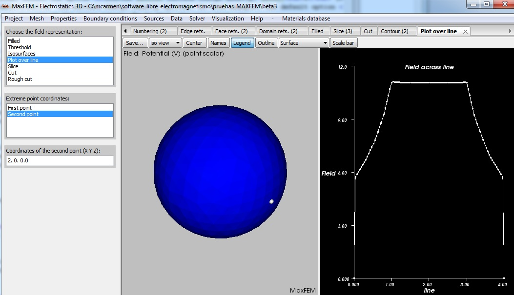
Figure 2: Plot over line representation of the potential.
Choose the option Rough cut and select iso view in the graphic window to display the potential on the part of the domain determined by a given plane. The user can modify the origin and normal vector of the cutting plane in the Configuration box or manually at the graphic window.
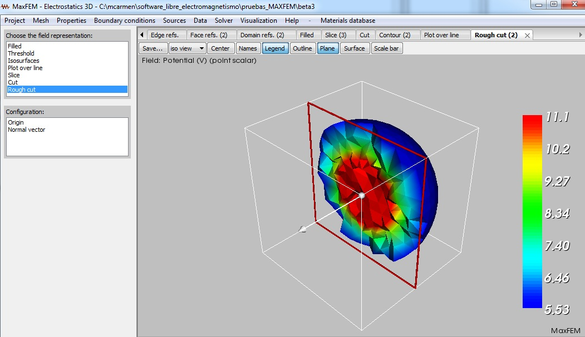
Figure 3: Rough cut representation of the potential.
To display the electric field, choose the option Visualization → Electric field of the menu bar. Select the option Vectors of the dialog box and then state the values for the scale and density of the arrows on the boxes below. For this picture, the scale is 0.02 and the density is 100.
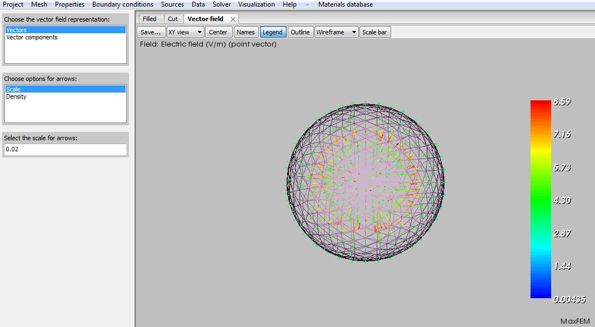
Figure 4: Electric field.
A zoom of the field can be done by using the right buttom of the mouse.
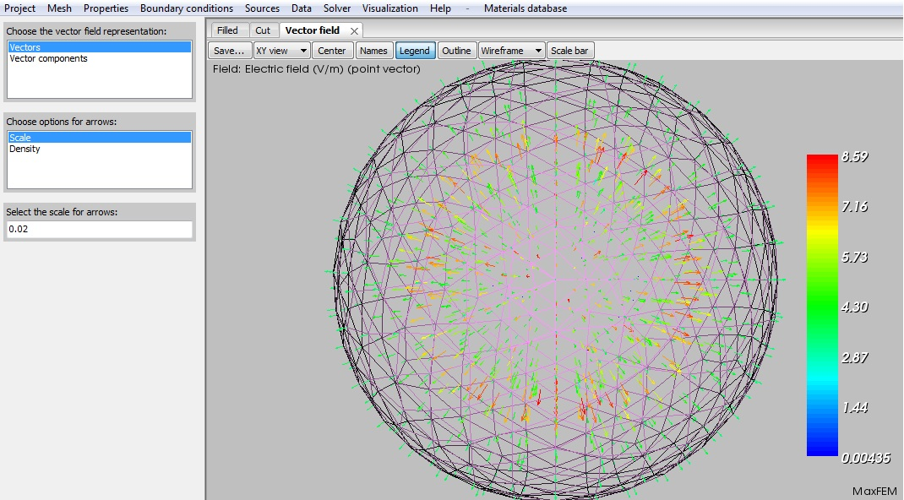
Figure 5: Zoom of the electric field representation.
Select the option Vector components to represent each of the components of the electric field or its modulus. The options Vector components → Modulus → Plot over line were chosen for the next figure.
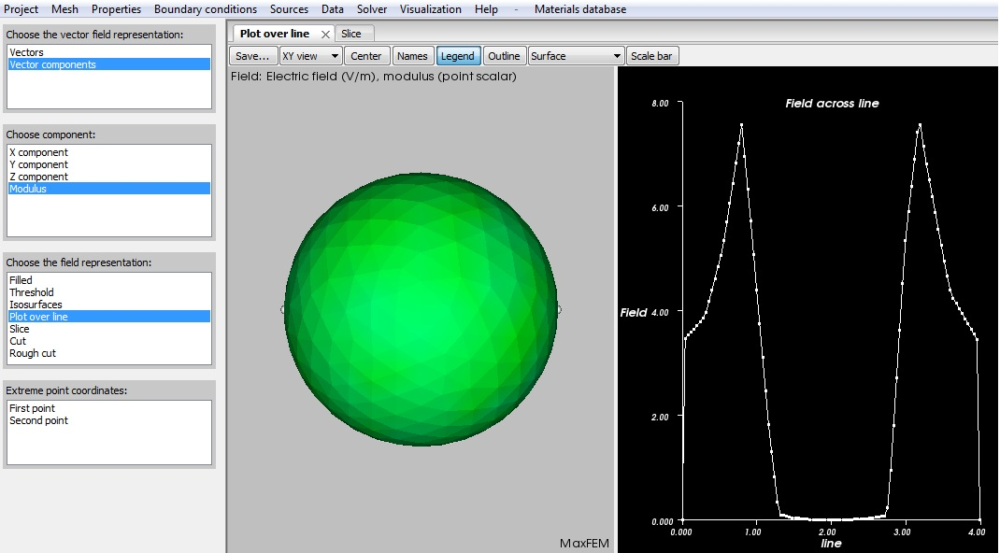
Figure 6: Modulus of the electric field.
In this example, the electrostatic potential V generated by two uniformly surface charged spheres with center the origin and radius R1 = 2 and R2 = 1 is computed. Its surface charge density is denoted by ρS (C/m2). Then, the analytical expression for the potential in a point of coordinates (x,y,z) is given by .
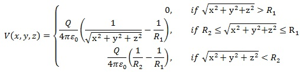
where ε0 denotes the vacuum electric permittivity. The modulus of the electric field is given by
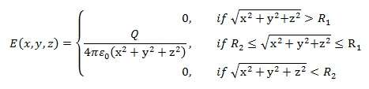
For the numerical resolution, a sphere of center (0,0,0) and radius 3 containing the two concentric charged spheres of radius 1 and 2 is considered as computational domain. The relative permittivity is considered to be constant and equal to 1. The surface charge density is ρS= 1e-10 C/m2 on the inner sphere and ρS= 2.5e-11 C/m2 on the outer sphere.
Once MaxFEM is open, the user must select the application Electrostatic3D from the Project of the menu bar.
Project → Applications→ Electrostatic3D
Remember that before start to work with a particular application, the user must choose a working directory.
Then, from the item Project of the Menu bar, select
Project → Sample Data→ Example 3: Two uniformly charged spheres
The computational domain is a sphere of center (0,0,0) and radius 3 containing the two concentric charged spheres of radius 1 and 2. The user must upload the mesh malla3Dcs2e_tet.mfm from the Mesh item of the menu bar .
Mesh → Open → Choose mesh file → malla3Dcs2e_tet.mfm
The user can display the mesh of the computational domain by choosing the option Visualization → Mesh of the Menu bar. If not, the computational domain will be displayed when selecting any item from the menu bar.
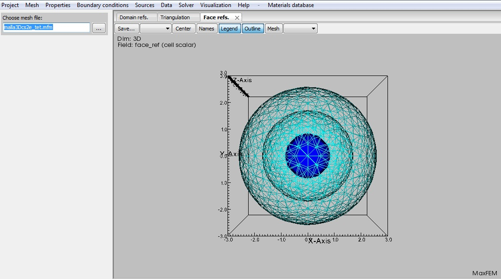
Figure 1: Computational domain with the inner sphere in blue.
After we have the mesh, we start to go through the menu bar from the left to right and we choose the different options related to the whole simulation.
The materials considered in this example are the so-called Test material 2 and Test material 3, and air, and their properties have been previously defined in the materials database of the interface. In order to assign these materials to the computational domain, the user must:
Select the item Properties → Materials of the Menu bar.
In the Choose domain references dialog box, select the reference 1.
The dialog box Choose material appears; by default, the material named Test material 2 associated to the reference 1 is displayed.
In the Choose domain references dialog box, select the reference 2.
The dialog box Choose material appears; by default, the material named Air associated to the reference 2 is displayed.
In the Choose domain references dialog box, select the reference 3.
The dialog box Choose material appears; by default, the material named Test material 3 associated to the reference 3 is displayed.
The user can display the different properties of this material in Materials database item of the menu bar. To do that,
Select the option Materials database → Open
A dialog box appears where the different materials are displayed. Select Test material 2.
A new dialog box appears where the different electromagnetic magnitudes are displayed. Click on the property of your interest, for instance, Relative permittivity.
Choose A constant in the box below and then Isotropic in the Behavior box.
Value displays the value of relative electric permittivity for the selected material, in this case, 1.
Now we are going to impose the boundary conditions. A Dirichlet boundary condition introduced as a constant is considered in boundary references 1, 2, 3, 4, 13, 14, 19 and 24. To impose these boundary conditions the user must:
Select the option Boundary conditions → Dirichlet: electric scalar potential in the menu bar.
Click on Condition 1 on the Dirichlet conditions dialog box.
In the dialog box The condition is given by, select the option A constant
Click on Surface reference. By default, references 1, 2, 3, 4, 13, 14, 19, 24 associated to this boundary condition are displayed in the box below.
Click on Constant value. By default, 5.647165 appears in Constant value box.
Click on the item Sources of the Menu bar to continue with the resolution procedure.
To define the source of the problem, select the option Sources → Surface charge density, ρS (C/m2) in the menu bar. A dialog box appears where the user can select/define the surface charge density options. In this example, the default option Source 1 and Source 2 are displayed. So now we need to specify the surface charge density at the two charged spheres. To do that, the user must:
Click on Source 1. A dialog box is displayed below.
In the dialog box The source is given by, select the option A constant
Click on Surface reference. By default, references 9, 10, 11, 12, 17, 18, 21, 22 associated to this source are displayed in the box below.
Click on Constant value to display/define the value of the charge density. In this example, the default value is 1e-10 (in C/m2).
Click on Source 2. A dialog box is displayed below.
In the dialog box The source is given by, select the option A constant
Click on Surface reference. By default, references 5, 6, 7, 8, 15, 16, 20, 23 associated to this source are displayed in the box below.
Click on Constant value to display/define the value of the charge density. In this example, the default value is 2.5e-11 (in C/m2).
Select the item Run (or Run remote depending on your preference) of the menu bar to proceed with the resolution of the problem.
Select the item Visualization of the menu bar to display the results.
Click on the option Potential to display the potential. A dialog box appears where the user can choose the field representation.
Choose the option Plot over line and select XY view in the graphic window to display the potential both in the domain and along a line. The user can modify the coordinates of the extreme points of the line in the Extreme points coordinates box or manually at the graphic window. In the next figure, the potential is plotted over the line from point (-3,0,0) to (3,0,0). As it was expected, the potential has a constant value in the inner charged sphere.
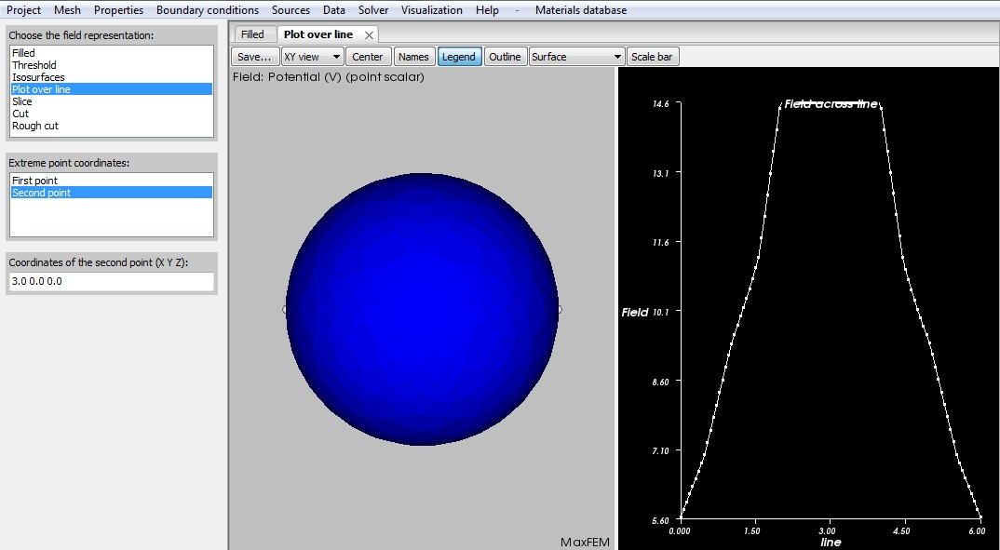
Figure 2: Plot over line representation of the potential.
Choose the option Rough cut and select iso view in the graphic window to display the potential on the part of the domain determined by a given plane. The user can modify the origin and normal vector of the cutting plane in the Configuration box or manually at the graphic window.
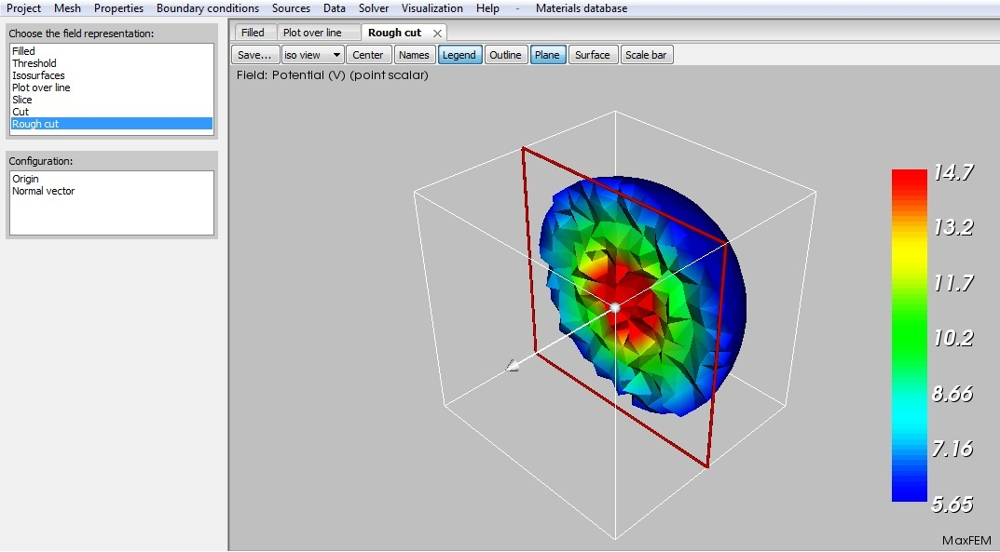
Figure 3: Rough cut representation of the potential.
To display the electric field, choose the option Visualization → Electric field of the menu bar. Select the option Vectors of the dialog box and then state the values for the scale and density of the arrows on the boxes below. For this picture, the scale is 0.04 and the density is 100.
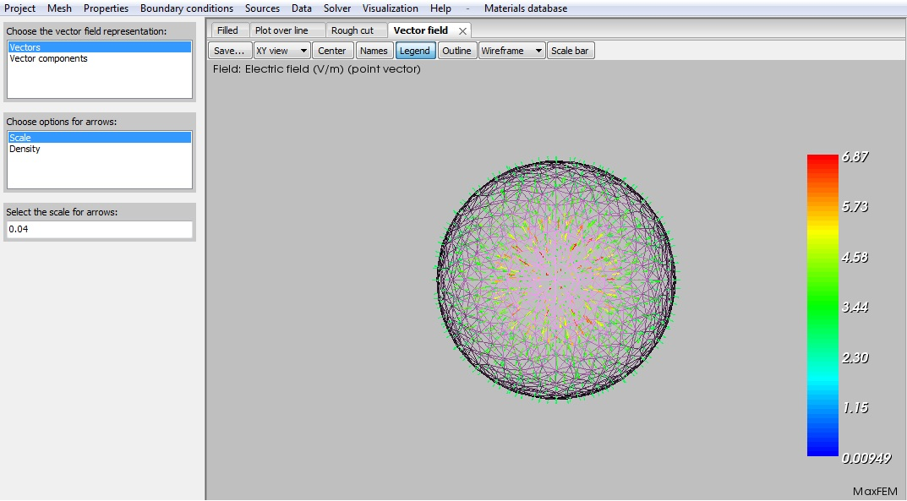
Figure 4: Electric field.
A zoom of the field can be done by using the right buttom of the mouse.
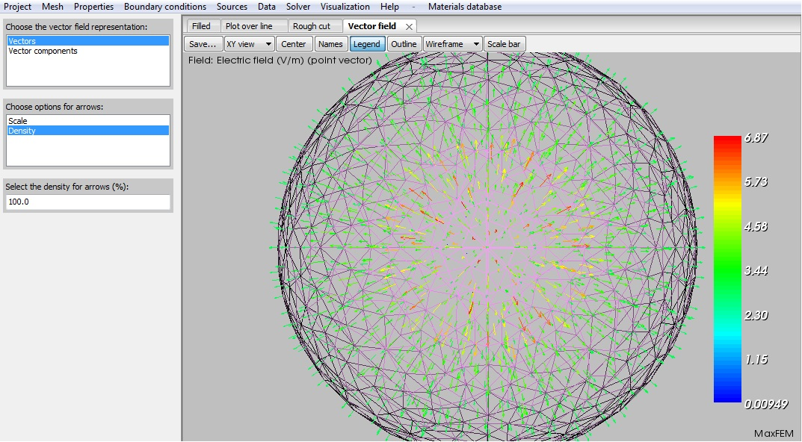
Figure 5: Zoom of the electric field representation.
Select the option Vector components to represent each of the components of the electric field or its modulus. The options Vector components → X component → Rough cut were chosen for the next figure as well as iso view in the graphic window. .
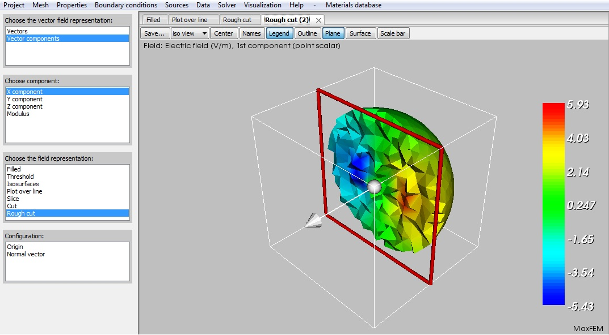
Figure 6: First component of the electric field.
In this example, the electrostatic potential V generated by a uniformly charged segment is computed. Its line charge density is denoted by ρl (C/m). Then, the analytical expression for the potential in a point of coordinates (x,y,z) is given by (see [1])
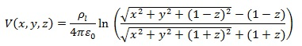
where ε0 denotes the vacuum electric permittivity. The electric field is given by
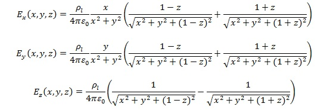
For the numerical resolution, a cylinder with axis the Z axis, radius 1 and height 3 containing the charged segment with extreme points (0,0,-1) and (0,0,1) is considered as computational domain. The relative permittivity is considered to be constant and equal to 1. The line charge density is ρl= 1.d-10 C/m which is introduced by a predefined function.
Once MaxFEM is open, the user must select the application Electrostatic3D from the Project of the menu bar.
Project → Applications→ Electrostatic3D
Remember that before start to work with a particular application, the user must choose a working directory.
Then, from the item Project of the Menu bar, select
Project → Sample Data→ Example 4: One uniformly charged segment
The computational domain is a cylinder with axis the Z axis, radius 1 and height 3 containing the segment with extreme points (0,0,-1) and (0,0,1). The user must upload the mesh malla3D_curvilinea.mfm from the Mesh item of the menu bar .
Mesh → Open → Choose mesh file → malla3D_curvilinea.mfm
The user can display the charged segment by choosing the option Visualization → Mesh → Line references of the Menu bar and choosing the reference 9 and also iso view in the graphic window. If not, the computational domain will be displayed when selecting any item from the menu bar.
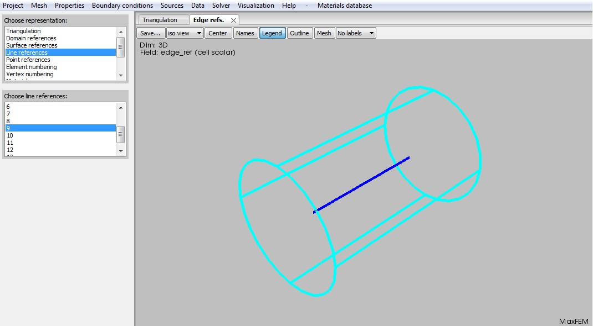
Figure 1: Computational domain with the charged segment in blue.
After we have the mesh, we start to go through the menu bar from the left to right and we choose the different options related to the whole simulation.
The material considered in this example is the so-called Test material 2 and its properties have been previously defined in the materials database of the interface. in order to assign this material to the computational domain, the user must:
Select the item Properties → Materials of the Menu bar.
In the Choose domain references dialog box, select the reference 1.
The dialog box Choose material appears; by default, the material named Test material 2 associated to the reference 1 is displayed.
The user can display the different properties of this material in Materials database item of the menu bar. To do that,
Select the option Materials database → Open
A dialog box appears where the different materials are displayed. Select Test material 2.
A new dialog box appears where the different electromagnetic magnitudes are displayed. Click on the property of your interest, for instance, Relative permittivity.
Choose A constant in the box below and then Isotropic in the Behavior box.
Value displays the value of relative electric permittivity for the selected material, in this case, 1.
Now we are going to impose the boundary conditions. A Dirichlet boundary condition introduced as a constant is considered in boundary references 1, 2, 3, 4, 5 and 6. To impose these boundary conditions the user must:
Select the option Boundary conditions → Dirichlet: electric scalar potential in the menu bar.
Click on Condition 1 on the Dirichlet conditions dialog box.
In the dialog box The condition is given by, select the option A function.
Click on Surface reference. By default, references 1, 2, 3, 4, 5, 6 associated to this boundary condition are displayed in the box below.
Click on Function name. By default, Example 4: One uniformly charged segment appears in Choose Function name box.
Click on the item Sources of the Menu bar to continue with the resolution procedure.
To define the source of the problem, select the option Sources → line charge density, ρl (C/m) in the menu bar. A dialog box appears where the user can select/define the line charge density options. In this example, the default option Source 1 is displayed. So now we need to specify the line charge density at the segment. To do that, the user must:
Click on Source 1. A dialog box is displayed below.
In the dialog box The source is given by, select the option A function.
Click on Line reference. By default, reference 9 associated to this source is displayed in the box below.
Click on Function name to display/define the value of the charge. In this example, the default value is Example 4: One uniformly charged segment. Its value of ρl= 1.d-10 C/m is introduced as a predefined function.
Select the item Run (or Run remote depending on your preference) of the menu bar to proceed with the resolution of the problem.
Select the item Visualization of the menu bar to display the results.
Click on the option Potential to display the potential. A dialog box appears where the user can choose the field representation.
Choose the option Plot over line and select iso view in the graphic window to display the potential both in the domain and along a line. The user can modify the coordinates of the extreme points of the line in the Extreme points coordinates box or manually at the graphic window. In the next figure, the potential is plotted over the line from point (-1,0,0) to (1,0,0).
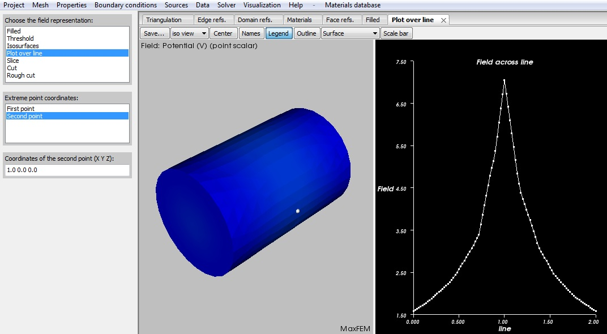
Figure 2: Plot over line representation of the potential.
Choose the option Rough cut and select iso view in the graphic window to display the potential on the part of the domain determined by a given plane. The user can modify the origin and normal vector of the cutting plane in the Configuration box or manually at the graphic window.
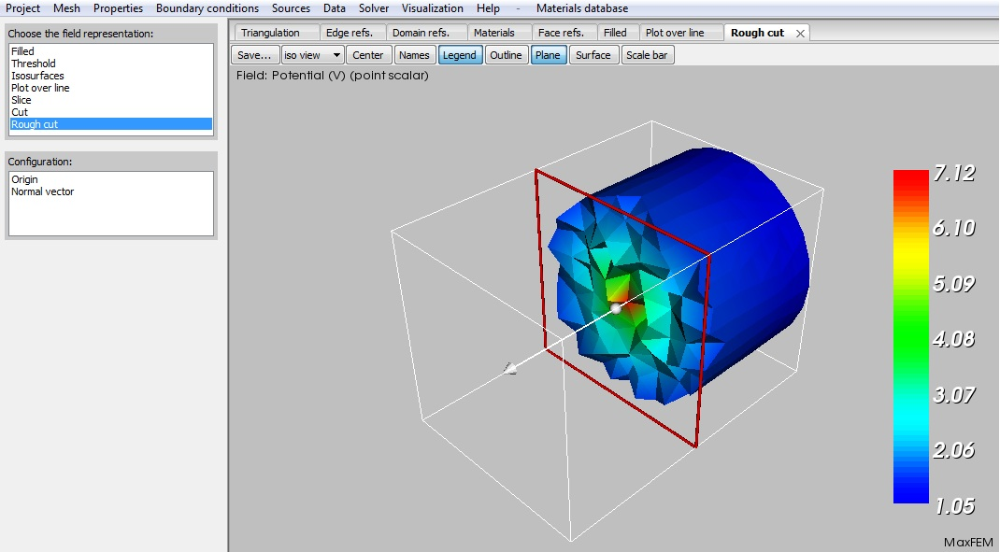
Figure 3: Rough cut representation of the potential.
To display the electric field, choose the option Visualization → Electric field of the menu bar. Select the option Vectors of the dialog box and then state the values for the scale and density of the arrows on the boxes below. For this picture, the scale is 0.01 and the density is 100.
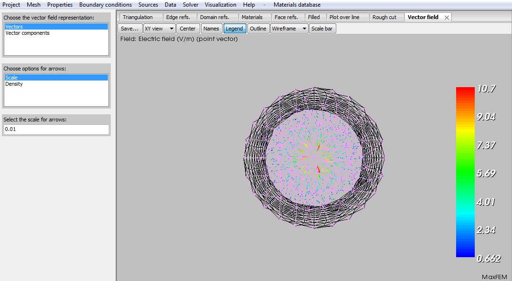
Figure 4: Electric field.
Select the option Vector components to represent each of the components of the electric field or its modulus. The options Vector components → X component → Slice were chosen for the next figure as well as iso view in the graphic window.
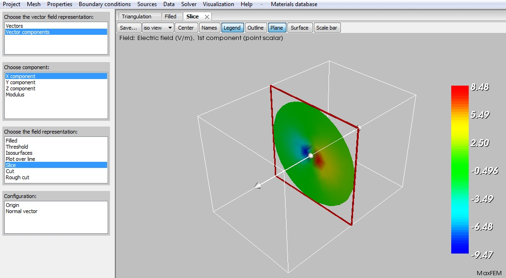
Figure 5: First component of the electric field.
In this example, the electrostatic potential V generated by one charged point located at the origin of coordinates is computed. Its charge is denoted by ρp (C). Then, the analytical expression for the potential in a point of coordinates (x,y,z) is given by
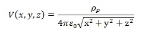
where ε0 denotes the vacuum electric permittivity. The electric field is given by
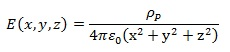
For the numerical resolution, a sphere of center (0,0,0) and radius 1 is considered as computational domain. The relative permittivity is considered to be constant and equal to 1. The line charge density is ρl= 1e-10 C.
Once MaxFEM is open, the user must select the application Electrostatic3D from the Project of the menu bar.
Project → Applications→ Electrostatic3D
Remember that before start to work with a particular application, the user must choose a working directory.
Then, from the item Project of the Menu bar, select
Project → Sample Data→ Example 5: One charged point
The computational domain is a sphere of center (0,0,0) and radius 1. The user must upload the mesh malla3Ddiscor1_tet.mfm from the Mesh item of the menu bar .
Mesh → Open → Choose mesh file → malla3Ddiscor1_tet.mfm
The user can display the computational domain by choosing the option Visualization → Mesh of the Menu bar. If not, the computational domain will be displayed when selecting any item from the menu bar.
After we have selected the mesh, we start to go through the menu bar from the left to right and we choose the different options related to the whole simulation.
The material considered in this example is the so-called Test material 3 and its properties have been previously defined in the materials database of the interface. in order to assign this material to the computational domain, the user must:
Select the item Properties → Materials of the Menu bar.
In the Choose domain references dialog box, select the reference 1.
The dialog box Choose material appears; by default, the material named Test material 3 associated to the reference 1 is displayed.
The user can display the different properties of this material in Materials database item of the menu bar. To do that,
Select the option Materials database → Open
A dialog box appears where the different materials are displayed. Select Test material 3.
A new dialog box appears where the different electromagnetic magnitudes are displayed. Click on the property of your interest, for instance, Relative permittivity.
Choose A constant in the box below and then Isotropic in the Behavior box.
Value displays the value of relative electric permittivity for the selected material, in this case, 1.
Now we are going to impose the boundary conditions. A Dirichlet boundary condition introduced as a constant is considered in boundary references 1, 2, 3, 4, 5, 6, 7 and 8. In order to impose these boundary conditions the user must:
Select the option Boundary conditions → Dirichlet: electric scalar potential in the menu bar.
Click on Condition 1 on the Dirichlet conditions dialog box.
In the dialog box The condition is given by, select the option A constant.
Click on Surface reference. By default, references 1, 2, 3, 4, 5, 6, 7, 8 associated to this boundary condition are displayed in the box below.
Click on Constant value. By default, 0.898774243250380 appears in Constant value box.
Click on the item Sources of the Menu bar to continue with the resolution procedure.
To define the source of the problem, select the option Sources → point charge ρp (C) in the menu bar. A dialog box appears where the user can select/define the point charge options. In this example, the default option Source 1 is displayed. So now we need to specify the point charge at the origin. To do that, the user must:
Click on Source 1. A dialog box is displayed below.
Click on X coordinates, then on Y coordinates and, finally, on Z coordinates to display the coordinates of the point source. In this example, the point (0,0,0) is considered.
Click on Values to display/define the value of the charge. In this example, the default value is 1e-10 (in C).
Select the item Run (or Run remote depending on your preference) of the menu bar to proceed with the resolution of the problem.
Select the item Visualization of the menu bar to display the results.
Click on the option Potential to display the potential. A dialog box appears where the user can choose the field representation.
Choose the option Plot over line and select iso view in the graphic window to display the potential both in the domain and along a line. The user can modify the coordinates of the extreme points of the line in the Extreme points coordinates box or manually at the graphic window. In the next figure, the potential is plotted over the line from point (-1,0,0) to (1,0,0).
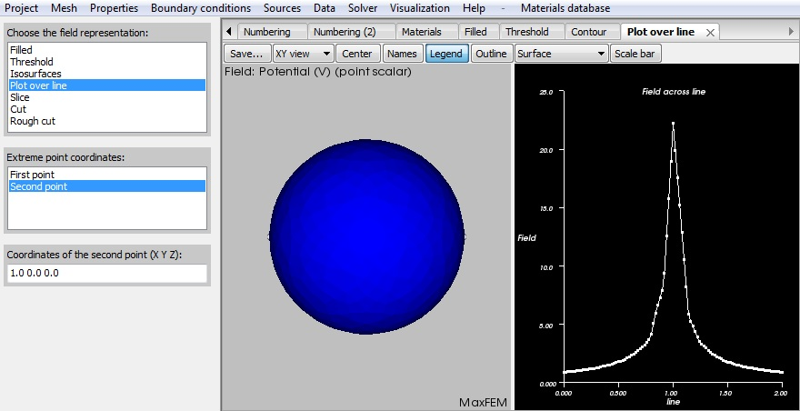
Figure 1: Plot over line representation of the potential.
Choose the option Rough cut and select iso view in the graphic window to display the potential on the part of the domain determined by a given plane. The user can modify the origin and normal vector of the cutting plane in the Configuration box or manually at the graphic window.
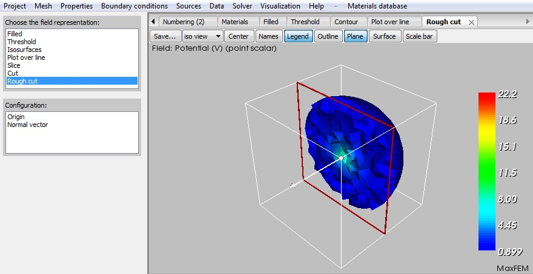
Figure 2: Rough cut representation of the potential.
To display the electric field, choose the option Visualization → Electric field of the menu bar. Select the option Vectors of the dialog box and then state the values for the scale and density of the arrows on the boxes below. For this picture, the scale is 0.002 and the density is 100.
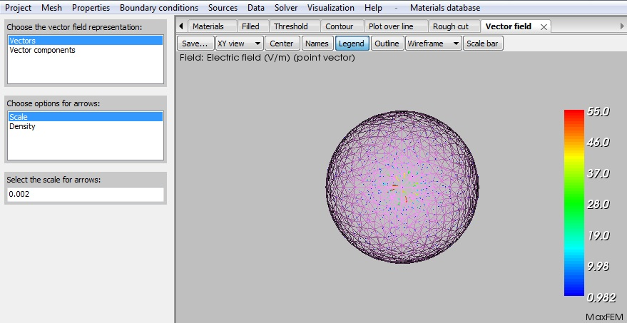
Figure 3: Electric field.
Select the option Vector components to represent each of the components of the electric field or its modulus. The options Vector components → X component → Cut were chosen for the next figure as well as iso view in the graphic window.
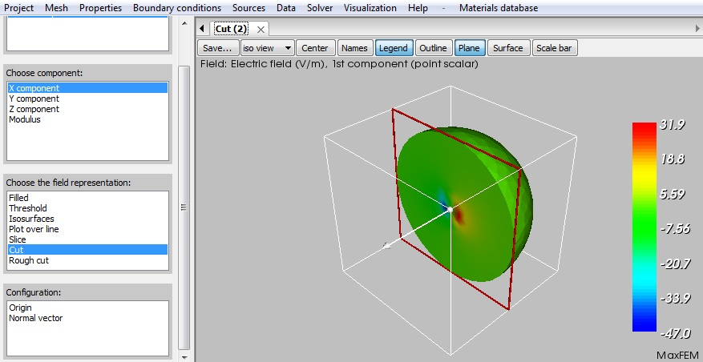
Figure 4: First component of the electric field.
In this example, the electrostatic potential V generated by two charged points located at p1 = (2,0,0) and p2 = (-2,0,0) is computed. Their charges are denoted by ρp1 and ρp2 (C). Then, the analytical expression for the potential in a point of coordinates (x,y,z) is given by
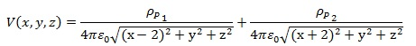
where ε0 denotes the vacuum electric permittivity. The electric field is given by
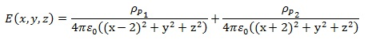
For the numerical resolution, an ellipsoid with semi-principal axes of length a = 4, b = c = 1 is considered as computational domain. The relative permittivity is considered to be constant and equal to 1. The point charges are ρp1 = 1e-10 and ρp2 = -1e-10 C.
Once MaxFEM is open, the user must select the application Electrostatic3D from the Project of the menu bar.
Project → Applications→ Electrostatic3D
Remember that before start to work with a particular application, the user must choose a working directory.
Then, from the item Project of the Menu bar, select
Project → Sample Data→ Example 6: two charged points
The computational domain is an ellipsoid with semi-principal axes of length a = 4, b = c = 1. The user must upload the mesh malla3Dcp2p_tet.mfm from the Mesh item of the menu bar .
Mesh → Open → Choose mesh file → malla3Dcp2p_tet.mfm
The user can display the mesh of the computational domain by choosing the option Visualization → Mesh of the Menu bar. If not, the computational domain will be displayed when selecting any item from the menu bar.
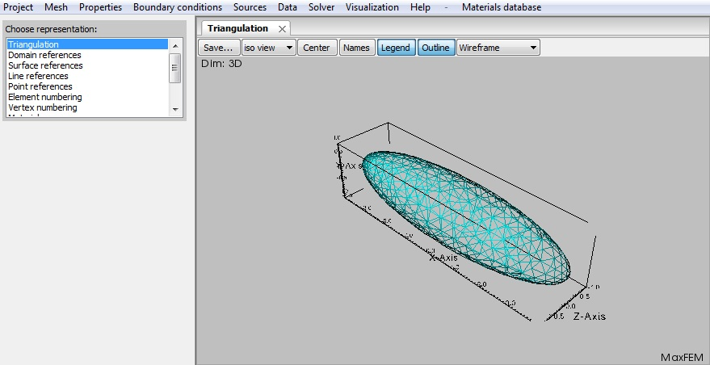
Figure 1: Mesh of the computational domain.
After we have selected the mesh, we start to go through the menu bar from the left to right and we choose the different options related to the whole simulation.
The material considered in this example is the so-called Test material 3 and its properties have been previously defined in the materials database of the interface. in order to assign this material to the computational domain, the user must:
Select the item Properties → Materials of the Menu bar.
In the Choose domain references dialog box, select the reference 1.
The dialog box Choose material appears; by default, the material named Test material 3 associated to the reference 1 is displayed.
The user can display the different properties of this material in Materials database item of the menu bar. To do that,
Select the option Materials database → Open
A dialog box appears where the different materials are displayed. Select Test material 3.
A new dialog box appears where the different electromagnetic magnitudes are displayed. Click on the property of your interest, for instance, Relative permittivity.
Choose A constant in the box below and then Isotropic in the Behavior box.
Value displays the value of relative electric permittivity for the selected material, in this case, 1.
Now we are going to impose the boundary conditions. A Dirichlet boundary condition introduced as a predefined function is considered in boundary references 1, 2, 3, 4, 5, 6, 7 and 8. In order to impose these boundary conditions the user must:
Select the option Boundary conditions → Dirichlet: electric scalar potential in the menu bar.
Click on Condition 1 on the Dirichlet conditions dialog box.
In the dialog box The condition is given by, select the option A function.
Click on Surface reference. By default, references 1, 2, 3, 4, 5, 6, 7, 8 associated to this boundary condition are displayed in the box below.
Click on Function name. By default, Example 6: two charged points appears in Choose Function name box.
Click on the item Sources of the Menu bar to continue with the resolution procedure.
To define the source of the problem, select the option Sources → point charge ρp (C) in the menu bar. A dialog box appears where the user can select/define the point charge options. In this example, the default option Source 1 is displayed. So now we need to specify the point charges at p1 and p2. To do that, the user must:
Click on Source 1. A dialog box is displayed below.
Click on X coordinates, then on Y coordinates and, finally, on Z coordinates to display the coordinates of the point source. In this example, the points (-2,0,0) and (2,0,0) are considered.
Click on Values to display/define the value of the charges. In this example, the values -1e-10 and 1e-10 (in C) are considered at (-2,0,0) and (2,0,0), respectively .
Select the item Run (or Run remote depending on your preference) of the menu bar to proceed with the resolution of the problem.
Select the item Visualization of the menu bar to display the results.
Click on the option Potential to display the potential. A dialog box appears where the user can choose the field representation.
Choose the option Plot over line and select iso view in the graphic window to display the potential both in the domain and along a line. The user can modify the coordinates of the extreme points of the line in the Extreme points coordinates box or manually at the graphic window. In the next figure, the potential is plotted over the line from point (-4,0,0) to (4,0,0).
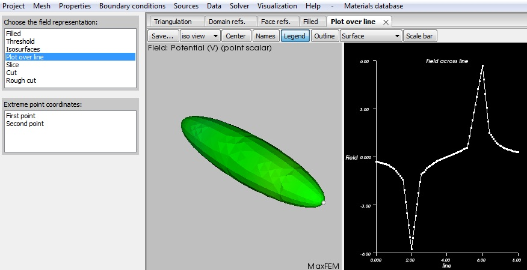
Figure 2: Plot over line representation of the potential.
Choose the option Cut and select iso view in the graphic window to display the potential on the part of the domain determined by a given plane. The user can modify the origin and normal vector of the cutting plane in the Configuration box or manually at the graphic window.
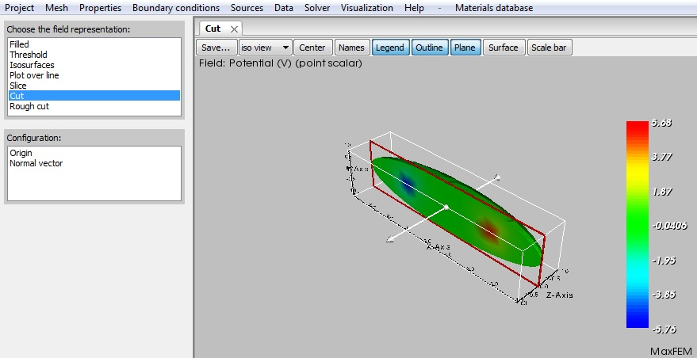
Figure 3: Cut representation of the potential.
To display the electric field, choose the option Visualization → Electric field of the menu bar. Select the option Vectors of the dialog box and then state the values for the scale and density of the arrows on the boxes below. For this picture, the scale is 0.1 and the density is 100.
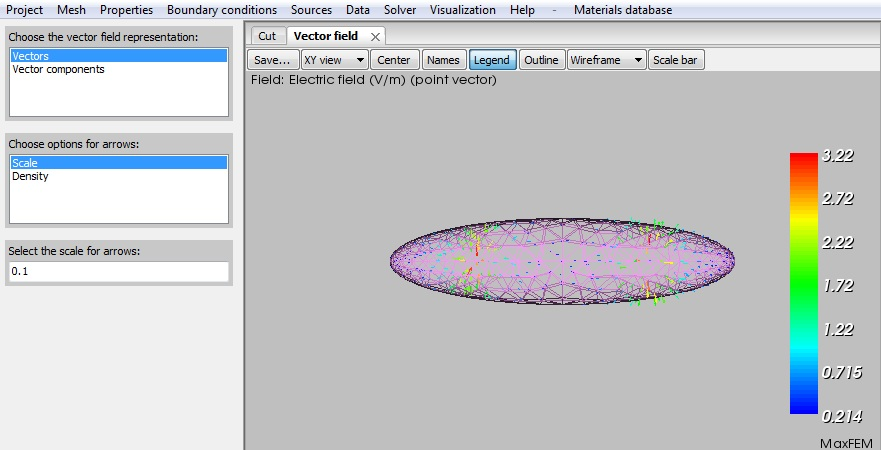
Figure 4: Electric field.
A detail of the electric field near p1 is shown in the next figure the scale is 0.2 and the density is 200.
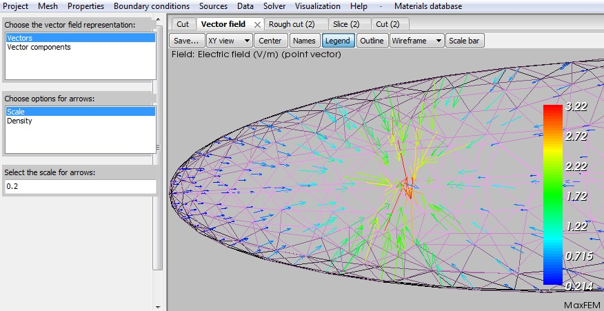
Figure 5: Electric field near p1.
Select the option Vector components to represent each of the components of the electric field or its modulus. The options Vector components → Modulus → Slice were chosen for the next figure as well as iso view and Outline in the graphic window.
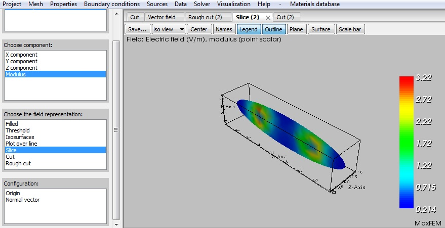
Figure 6: Modulus of the electric field.